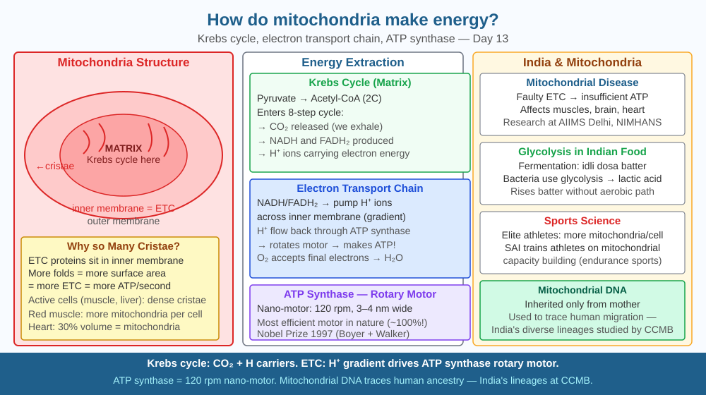

By the end of this lesson, you should be able to explain how mitochondria produce ATP, describe the electron transport chain, and predict what a cell without mitochondria would experience.
A marathon runner burns roughly 2,500 kcal over 42 km. Every joule of that energy was released inside mitochondria, in reactions happening billions of times per second in trillions of cells simultaneously. How does this tiny organelle produce so much energy?
Mitochondria structure: Double membrane. Outer membrane: smooth, permeable. Inner membrane: highly folded into cristae (increases surface area), contains ATP synthase and electron transport proteins. Matrix: fluid inside, contains Krebs cycle enzymes and mitochondrial DNA.
Krebs Cycle (matrix): - Pyruvate (from glycolysis) enters → Acetyl-CoA (2C) - 2-carbon fragment joins 4-carbon molecule → 6-carbon citric acid - Through 8 reactions: 3 CO₂ released, electron carriers NADH + FADH₂ loaded - Net per glucose: 6 NADH, 2 FADH₂, 2 ATP
Electron Transport Chain (inner membrane): - NADH and FADH₂ donate electrons to protein complexes (I, II, III, IV) - Electrons passed down the chain release energy → pump protons (H⁺) from matrix to intermembrane space - Proton gradient drives ATP synthase (F₀F₁-ATP synthase) → 34 ATP per glucose - O₂ is the final electron acceptor → combines with electrons + H⁺ → H₂O
Total yield: 38 ATP per glucose (theoretical max; real value ~30–32 due to membrane leakage).
Think of the mitochondrion as a hydroelectric dam:
A cell without mitochondria is like a city without its power plant. It can run on emergency batteries (anaerobic glycolysis) for a short time, but complex work — muscle contraction, nerve signalling, protein synthesis — shuts down quickly.
The included SVG shows a single mitochondrion in cut-away cross-section. The outer membrane is a smooth oval boundary (grey). Inside, the inner membrane is shown as a heavily folded structure in dark blue, with the folds (cristae) labelled and extending into the matrix. The matrix (pale blue interior) contains a circular arrow labelled "Krebs cycle" with CO₂ bubbles exiting and NADH/FADH₂ packets pointing rightward. Along the inner membrane, four vertical protein blocks labelled "Complex I–IV" are shown in sequence, with a horizontal electron arrow (e⁻) flowing left to right across them; vertical H⁺ arrows show protons being pumped upward into the intermembrane space (the gap between inner and outer membranes, coloured amber). At the far right of the inner membrane, a mushroom-shaped structure labelled "ATP synthase" has H⁺ flowing back down through it and an ATP coin emerging on the matrix side. An O₂ molecule enters at Complex IV and exits as H₂O.

Mitochondrial diseases affect ~1 in 5,000 Indians — causing muscle weakness, neurological disorders, diabetes, and heart disease. LHON (Leber's hereditary optic neuropathy) causes blindness in young Indian men due to mitochondrial DNA mutations. AIIMS and NIMHANS research mitochondrial dysfunction. Diabetes (80 million Indians): insulin resistance impairs glucose entry into cells, starving mitochondria. Metformin (most prescribed diabetes drug globally) works partly by inhibiting mitochondrial Complex I — reducing glucose output from the liver. Understanding exactly where in the electron transport chain metformin acts is what allows pharmacologists to predict its side effects and safe dosing range.
Exercise physiology: Count your resting heart rate (beats/min) then do 2 minutes of star jumps. Immediately recount. Your heart rate increased to deliver more oxygen to mitochondria for increased ATP production. Your breathing rate also increased (to supply O₂ and expel CO₂ from the Krebs cycle). Count breaths per minute at rest, then immediately after exercise. Record both numbers. You are measuring your mitochondrial demand in real time — a higher heart and breathing rate directly reflects higher electron transport chain activity in your muscle cells.
Peter Mitchell won the Nobel Prize (1978) for the chemiosmotic theory: ATP is made not by direct chemistry but by the flow of protons through ATP synthase, driven by a proton gradient across the inner mitochondrial membrane — like water flowing through a turbine. ATP synthase is a nanoscale rotary motor — its gamma subunit physically rotates 120° per ATP molecule made, completing a full rotation per 3 ATP. Paul Boyer and John Walker confirmed this with elegant biochemistry (Nobel 1997). This same principle (proton gradients) is used in a different way by the bacteria that were the ancestors of mitochondria — and is still the fundamental energy mechanism of virtually all life on Earth.
Predict: Cyanide is a poison that blocks Complex IV of the electron transport chain. Using the dam analogy, explain step by step what would happen to ATP production in a cell exposed to cyanide. Why would nerve cells and heart muscle cells be the first to fail, and what molecule would accumulate in the matrix?
What is the primary function of mitochondria in a cell?
Correct answer: B
Why is understanding the mechanism of ATP production more valuable than just knowing mitochondria make energy?
Correct answer: C
If a cell had no mitochondria, what would you predict about its energy production?
Correct answer: B
A researcher discovers a drug that makes the inner mitochondrial membrane slightly "leaky" — protons can seep back from the intermembrane space into the matrix without passing through ATP synthase.
Predict: (a) what happens to the proton gradient; (b) what happens to ATP production; (c) what happens to the rate of the electron transport chain (does it speed up or slow down, and why?); (d) what happens to heat production in the cell; and (e) which tissue in the human body naturally uses a similar leaky-membrane mechanism for a specific purpose — name it and explain why it is beneficial in that context.
Mitochondria have their own DNA — a circular genome of just 37 genes — and they reproduce by splitting in two, exactly like bacteria. You inherited every mitochondrion in your body from your mother's egg cell, not from your father's sperm (which loses its mitochondria after fertilisation). This means mitochondrial DNA passes unchanged through the female line, and scientists have used it to trace all living humans back to a single woman who lived in Africa approximately 150,000 years ago — sometimes called "Mitochondrial Eve."
Mitochondria are nanoscale hydroelectric dams: they use a proton gradient across the inner membrane to spin ATP synthase, and without oxygen to drain that gradient, the entire system halts and the cell loses 95 % of its energy supply.